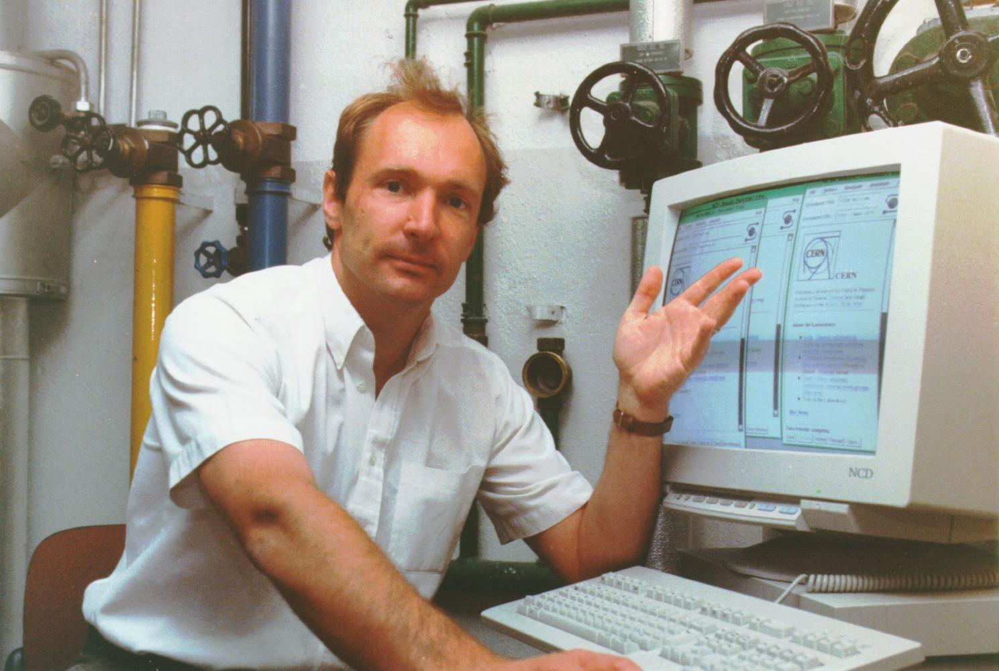

Mit welchen fachlichen Argumenten wurde das WWW-Proposal von TBL abgelehnt?
Im Jahre 1989 beginnt Tim-Berners-Lee als Mitarbeiter des CERN mit der Entwicklung eines Informations-Management-Systems basierend auf seinem Konzept "HyperText and CERN". Dafür entwickelte er eine Vielzahl verschiedener Technologien im Alleingang, um sich das nötige Fundament zu schaffen. Zu TBL's Erfindungen gehören HTTP, HTML, URL, WWW, Browser, Server und eine Suchmaschine. Als er 1991 sein WWW-Konzept bei der weltgrößten Hypertext-Konferenz einreicht, stößt er auf Ablehnung. Das Konzept sei zu vage und man wünsche sich eine integere Lösung für die Verknüpfung verschiedener Informationen zwischen Computersystemem, welche die Möglichkeit von 'broken links' per Design ablehnt. Dem entsprechende Technologien seien in der Wissenschaft bereits erforscht worden, sagte man ihm.
Tim-Berners-Lee Ende der 80er im CERN
Was sind die fachlichen Argumente, warum das WWW dennoch ein Erfolg wurde?
Heute, Jahre später, finden wir eine Menschheit vor, die ohne das WWW nicht mehr exisiteren kann. Seine Funktionalität wird darüber hinaus ständig durch sich verbessernde, im Ursprung orthogonal zu einander ausgerichtete Technologien erweitert. Ein weiterer Hauptgrund für das ungehemmnte Wachstum des WWW's ist seine Dezentralität. Jedermensch ist nun in der Lage, seinen eigenen Server aufzusetzen um mit einer Webseite die Öffentlichkeit erreichen und erweitern zu können. Ermöglicht darüberhinaus auch dadurch, dass alle dazu nötigen Technologien patentfrei sind.
Was wäre der Preis für die garantierte Verhinderung von “broken links”?
Möchte man referenzielle Integrität für die Verlinkung einzelner Inhalte im WWW gewährleisten, so hat dies Vor- und Nachteile. Aus dem Bereich der Datenbanken wissen wir, dass eine Verlinkung zu einem Fremdschlüssel nur erfolgen kann, wenn im zu Referenzierenden dieser Fremdschlüssel als primärer Schlüssel enthalten ist. Man bräuchte Kenntnis über alle im WWW existierenden Schlüssel bzw. Links, also eine zentralisierte Verwaltung aller Primärschlüssel. Die Zentralisierung eines solchen "WWW" hätte wiederum hohen Verwaltungsaufwandt zur Folge. Viele eine solche Zentrale Verwaltung aus, dann ist das Netz Netz lahm gelegt, also Instabilität.